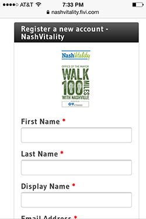
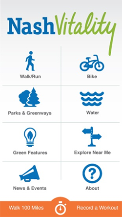
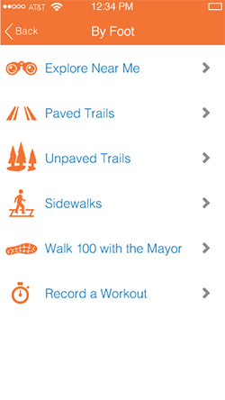
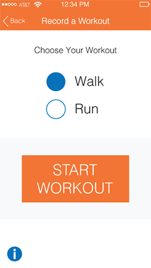
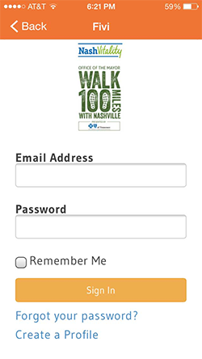
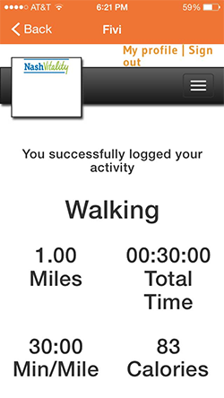

As a Walk 100 participant, you can track your miles using your smartphone! To make participating in the challenge even easier, download the free NashVitality mobile app on your smartphone from the iTunes Store or Google Play. The NashVitality app is a mobile guide to being healthy, active and green in Nashville. New for the Walk 100 Miles challenge, a mileage tracking feature has been added to the app so you can track and log your walking right on your phone. Just select “Record a Workout” from the app’s home screen to get started.
Step 1: If you haven’t done so already, create a profile by clicking the “Register Now” Button at https://nashvitality.fivi.com . Then, fill out the online form.
Step: 2 Download the NashVitality Mobile app to your smartphone from the iTunes Store or Google Play.
Step 3: Select Record A Workout from the bottom of the main screen or click Walk/Run to get more information on the Walk 100 Miles challenge. When you’re ready to track your walking or running activities, click Record A Workout.
Step 4: Click your activity then Start Workout. If you want to read instructions, click the information button.
Step 5: Begin recording your workout. Click “Pause” when you are taking a break and then “Finish” when you have completed your workout.

Step 6: Confirm and submit the workout to your nashvitality.fivi profile by clicking “Log Your Workout”. If you wish, you may edit your distance or time manually.

Step 7: If this is your first time logging in, the app will ask you to enter your e-mail address and nashvitality.fivi password. Click Remember Me to stay logged in for up to 30 days.
Once you’ve logged in, or, if you were already logged in, the nashvitality.fivi website will confirm your workout.
From the confirmation screen you can check your profile on the nashvitality.fivi website and view the history of your Walk 100 Mile activities. Alternatively, you can go back to the NashVitality Mobile App and record another workout!
Other NashVitality App Features
Other features of the app include interactive maps for all types of activities including walking, hiking, biking, water access, and much more. Plus, you learn about how to be greener with tools such as where to recycle or what incentives are available to be more energy efficient. Every section of the app has the "Explore Near Me" option which when clicked will display all category results in your immediate vicinity.